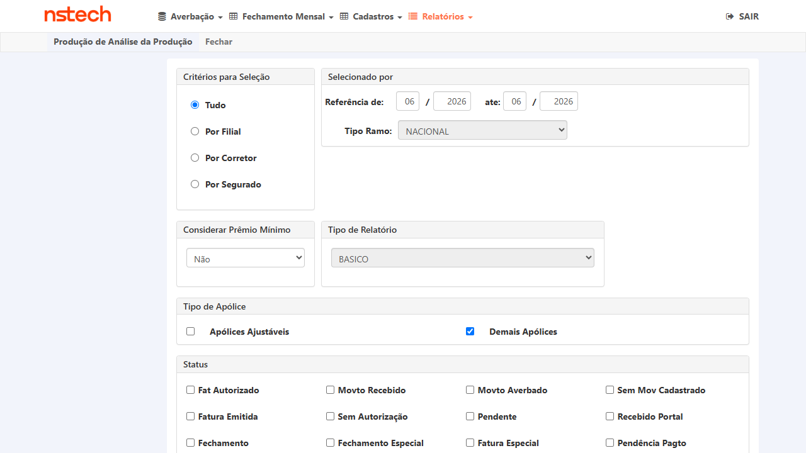
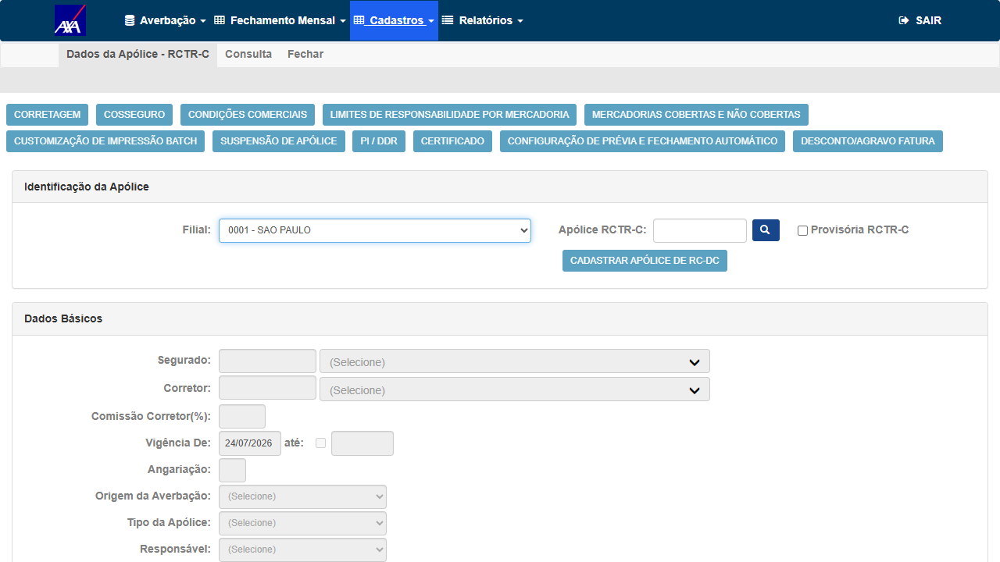

O relatório Análise de Produção deve passar a exibir a coluna "Tipo de Apólice" (ex.: Diária, Ajustável, entre outros tipos), da mesma forma que já existe em outros relatórios do sistema. Isso permite analisar a produção segmentada por tipo de apólice e padronizar a informação entre relatórios.
A coluna deve estar presente nos três contextos do relatório — Nacional, Internacional e Gestão — e em todos os formatos de exportação suportados. Os valores devem seguir a mesma nomenclatura e origem já usadas nos relatórios onde a coluna existe (sem divergência de rótulos).
Regra do card: "Não precisa tratar como indicativo, assim já fica padrão para todas as seguradoras." — ou seja, é uma coluna CORE, sem flag/indicativo por seguradora. Grounding de código: AnaliseProducaoController.AnaliseProducao(tipo, filial, ramo, …) e o modelo CitNetModel/RelatorioAnaliseProducao.cs (que hoje ainda não possui a coluna Tipo de Apólice).
Feature implantada e validada na AXA HML (build V 1.0.260724; fix CORE, deployado também na HDI). Tasks de desenvolvimento #7844 e #7885 Done. Execução cruzada nos 3 módulos (Nacional / Internacional / Gestão) e nos 2 formatos suportados (.xlsx e .txt).
Todos os arquivos abaixo estão versionados neste repositório (pasta evidencias/) e também anexados ao card AzDO #7762. Clique para baixar/abrir:
| CT | Evidência | Achado-chave |
|---|---|---|
| CT-RAP-001 | Nacional .xlsx · critérios (png) | 3.692 linhas, 0 em branco; DIÁRIA/AJUSTÁVEL/MENSAL DET/NÃO POSSUI |
| CT-RAP-002 | Internacional Demais .xlsx · Ajustáveis .xlsx | 1.344 + 1.448 linhas, 0 em branco — mas tudo "DIÁRIA": era o #7975, e este CT passou por engano em 24/07 |
| CT-RAP-002 reteste #7975 | Internacional 07/2026 .xlsx (03/08) | 495 linhas · 4 valores distintos · 25 apólices cruzadas com e_avb, 0 divergências |
| CT-RAP-003 | Gestão/GERAL .xlsx | 4.169 linhas, 0 em branco; cobre Nac+Int |
| CT-RAP-004 | cadastro RCTR-C (png) | campo "Tipo da Apólice" = origem da coluna |
| CT-RAP-005 | Gestão .txt | coluna presente no formato .txt, 4.168 linhas, 0 em branco |
In scope: inclusão e correção da coluna "Tipo de Apólice" no relatório Análise de Produção — presença e preenchimento por registro nos módulos Nacional, Internacional e Gestão; consistência de nomenclatura/origem com os demais relatórios; presença em todos os formatos de exportação; tratamento de apólice sem tipo definido; regressão (filtros/totais/comportamento) e performance.
Out of scope: demais colunas do relatório; outros relatórios que já possuem a coluna (servem apenas de referência de nomenclatura); alterações de layout não relacionadas.
Pré-requisitos:
https://hdi-yelum-hml-faturamento.nsseg.com.br; usuário/senha em .env (HML_HDI_YELUM_CITWEB_USER / HML_HDI_YELUM_CITWEB_PASS) — nunca versionar credencial.AnaliseProducao, exportação via DownloadArquivo).CA1: no módulo Nacional, ao gerar/exibir o relatório Análise de Produção, a coluna "Tipo de Apólice" deve estar presente e preenchida corretamente para cada registro.
Analitico-Producao-Basico-Nac-AXA-04a06-2026.xlsx — 3.698 linhas × 22 colunas; a coluna 21 = "Tipo de Apólice" está presente e preenchida em TODAS as 3.692 linhas de dados (0 vazias). Valores: DIÁRIA (3.668), AJUSTÁVEL (11), MENSAL DET (8), NÃO POSSUI TIPO DE APOLICE (5) — coerentes com o cadastro. Os 5 sem tipo (apólices legadas, anteriores à obrigatoriedade) exibem o rótulo "NÃO POSSUI TIPO DE APOLICE", nunca em branco (corrobora CT-RAP-006). Corrobora também CT-RAP-005 (coluna presente no export .xlsx).

CA2: mesmo comportamento do CT-RAP-001 aplicado ao módulo Internacional.
DIÁRIA (consistente com o tipo das apólices Internacionais AXA no período).O módulo Internacional retornou um único valor DIÁRIA nas 1.344 linhas do filtro
"Demais" e também nas 1.448 do filtro "Ajustáveis". Um export de apólices ajustáveis
inteiramente marcado como diária era o defeito #7975
em cima da mesa — e passou.
Por que passou: aceitei como prova de que "a coluna não é constante" a variedade de valores do módulo Nacional (CT-RAP-001). Nacional e Internacional são caminhos de código distintos; a evidência de um não vale pelo outro. O CT pedia "cruzamento com o cadastro" no passo 3 e isso não foi feito para o Internacional — só a contagem de vazios foi verificada.
Lição aplicada: "coluna preenchida" ≠ "coluna correta". Verificação de conteúdo
exige cruzar linha a linha com a fonte (tb_apo_int_cit.e_avb), no mesmo módulo, e um valor único em
toda a extração é sinal de hardcode até prova em contrário — nunca de coincidência de massa.
DIÁRIA 302 · MENSAL DET 172 · AJUSTÁVEL 19 ·
NÃO POSSUI TIPO DE APOLICE 2 — o valor único de 24/07 desapareceu.
Cruzamento apólice × cadastro (tb_apo_int_cit.e_avb) — 25 apólices, 0 divergências:
e_avb no cadastro | Tipo no relatório | Nº das apólices conferidas (nº, não quantidade) |
|---|---|---|
'A' | AJUSTÁVEL | apólices nº 7, 5106220003349 e 1 |
'N' | MENSAL DET | apólices nº 1910, 10, 777, 1710, 6062026, 4706220003379 e outras 15 |
'D' | DIÁRIA | apólice nº 1980 |
Critério que discrimina fix de bug: nenhuma apólice com e_avb ≠ 'D'
apareceu como DIÁRIA (0 suspeitos). Em especial a apólice 7 (e_avb='A') veio
AJUSTÁVEL — se o hardcode persistisse, ela viria DIÁRIA. A apólice
4706220003371 do reprovado da Fabiola não existe na AXA HML (0 linhas) — ela validou em
staging, que tem dados próprios; por isso o reteste usa a massa equivalente acima.
testes-automatizados/sprint-11-citweb/pbi-7762/ct_rap_tipo_apolice_reteste.py — reexecuta o cruzamento em qualquer tenant (--tenant axa|hdi)CA3: mesmo comportamento do CT-RAP-001 aplicado ao módulo Gestão.
DIÁRIA (4.166) e MENSAL DET (3) — diferencia o tipo por registro.CA4: os valores exibidos na coluna devem seguir a mesma nomenclatura e origem de dados já utilizadas nos demais relatórios onde a coluna existe — sem divergência de rótulos entre relatórios.
Tipo de Apólice e ocupa a mesma posição (coluna 22) nos três módulos (Nacional/Internacional/Gestão) — sem divergência de rótulo.DIÁRIA, AJUSTÁVEL, MENSAL DET — nomenclatura idêntica à do domínio de tipos de apólice do CITWEB (sem "Diario"/"Diária" divergentes).
CA5: a coluna deve estar disponível em todos os formatos de exportação já suportados pelo relatório (ex.: Excel, PDF, CSV), quando aplicável.
Analitico-Producao-Gestao-AXA-06-2026-formato-TXT.txt, delimitador ";"): coluna "Tipo de Apólice" presente (última coluna, idx 15) e preenchida em 4.168 linhas (DIÁRIA 4.165 + MENSAL DET 3), 0 em branco.CA6 (revisado): confirmar que a coluna "Tipo de Apólice" está sempre preenchida no relatório (nunca em branco), coerente com o campo ser obrigatório no cadastro; e que tentar cadastrar apólice sem Tipo Apólice é bloqueado.
NÃO POSSUI TIPO DE APOLICE — nunca célula vazia (coerente com a regra da Fabiola).CA7: a inclusão da nova coluna não deve alterar o comportamento, os filtros ou os totais já existentes no relatório.
CA8: a performance de geração do relatório não deve ser impactada de forma perceptível pela inclusão da nova coluna.
| Critério de aceite | CT(s) |
|---|---|
| Nacional — coluna presente e preenchida corretamente | CT-RAP-001 |
| Internacional — mesmo comportamento | CT-RAP-002 |
| Gestão — mesmo comportamento | CT-RAP-003 |
| Mesma nomenclatura/origem dos demais relatórios (sem divergência de rótulos) | CT-RAP-004 |
| Disponível em todos os formatos de exportação (Excel/PDF/CSV) | CT-RAP-005 |
| Coluna Tipo de Apólice nunca em branco (campo obrigatório) — Gate 2 Fabiola | CT-RAP-006 |
| Não altera comportamento/filtros/totais existentes | CT-RAP-007 |
| Performance não impactada perceptivelmente | CT-RAP-008 |
| Validado em HML com evidência antes do deploy em produção | Todos (execução em HML pós-deploy) |
{kind=link}
{kind=link}